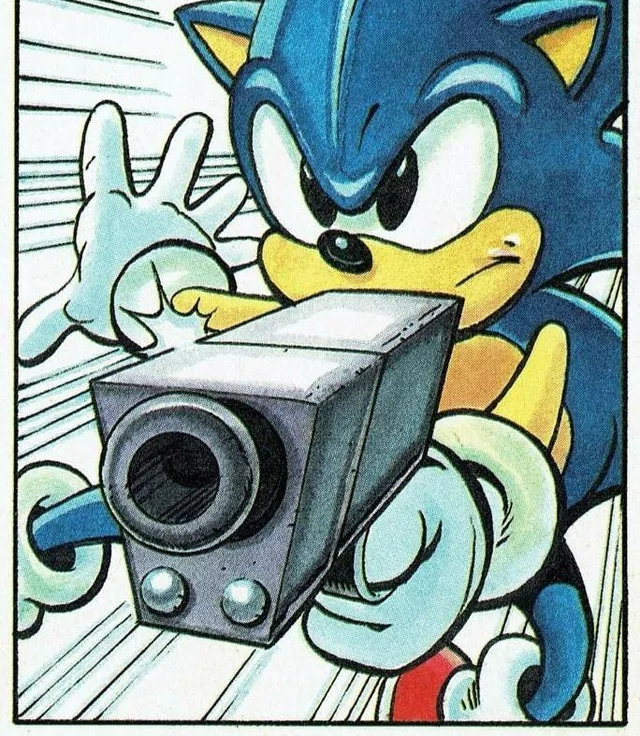

Дисклеймер: Это всё выдумки нейросети, и просто прикол, анекдот, и мем.
Соник - не просто синий ёж. Это ОБРАЗ ЖИЗНИ.
Когда твои друзья спрашивают, почему ты бегаешь по квартире с синим париком, просто покажи им эту статью.
Когда учитель говорит, что ты не сможешь пройти экзамен без подготовки, но ты посмотрел все фильмы про Соника накануне.
Однажды я пришёл на собеседование в костюме Соника. Меня не взяли на работу, но зато я нашёл трёх новых друзей в отделе безопасности, которые провожали меня до выхода.
Мой психолог: "Соник с пистолетом не существует, он не может причинить тебе вред".
Соник с пистолетом: смотрит на тебя с экрана
Когда мама говорит, что ужин готов, но ты в другом конце дома - это единственный момент, когда ты действительно чувствуешь себя Соником.
Если бы Соник был вашим соседом, вы бы никогда не опаздывали на работу, но постоянно жаловались бы на шум в 3 часа ночи и пропавшие из холодильника чили-доги.
Нажми сюда, чтобы увидеть лучшие мемы с Соником